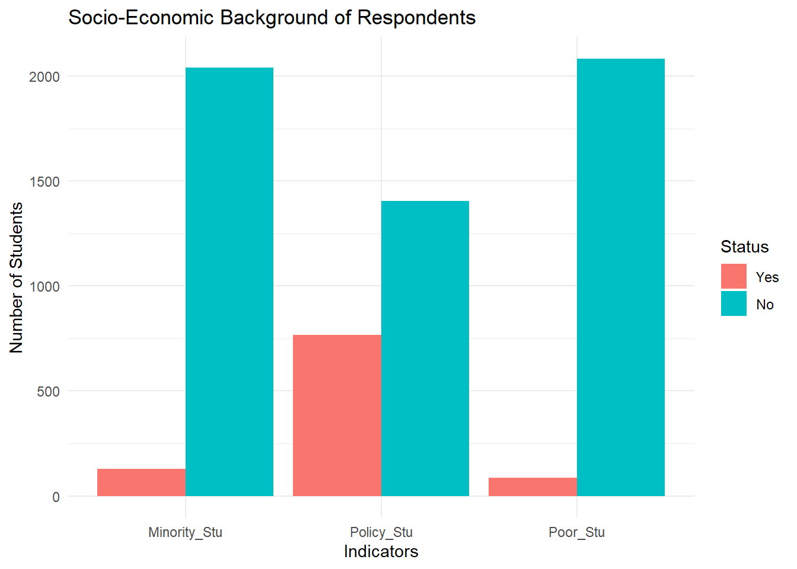
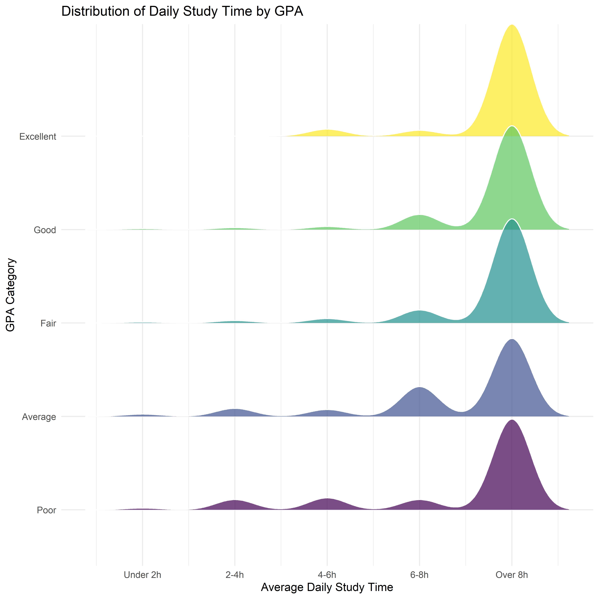
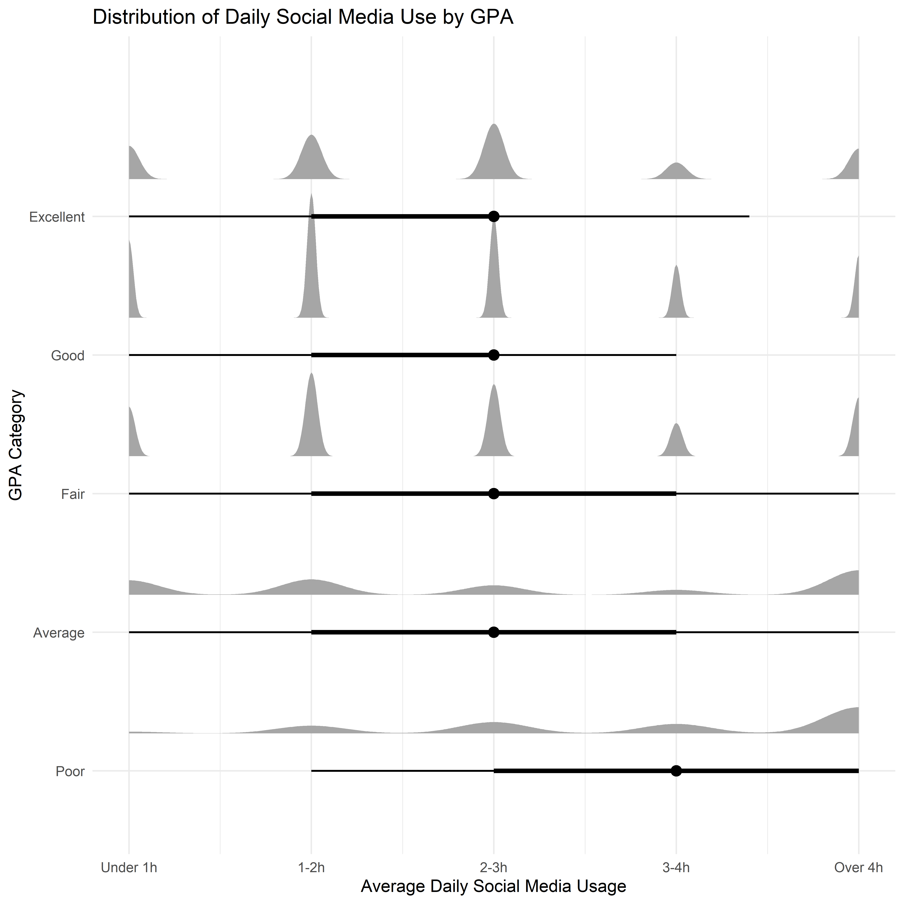
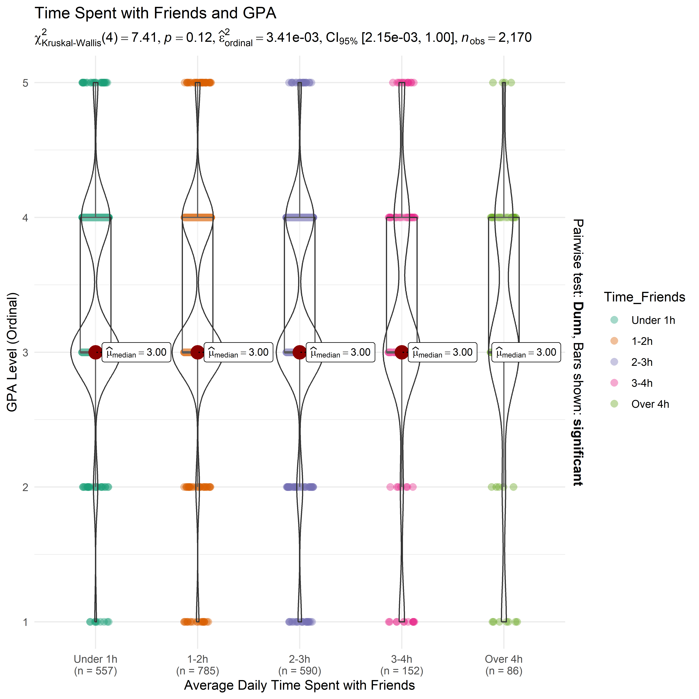
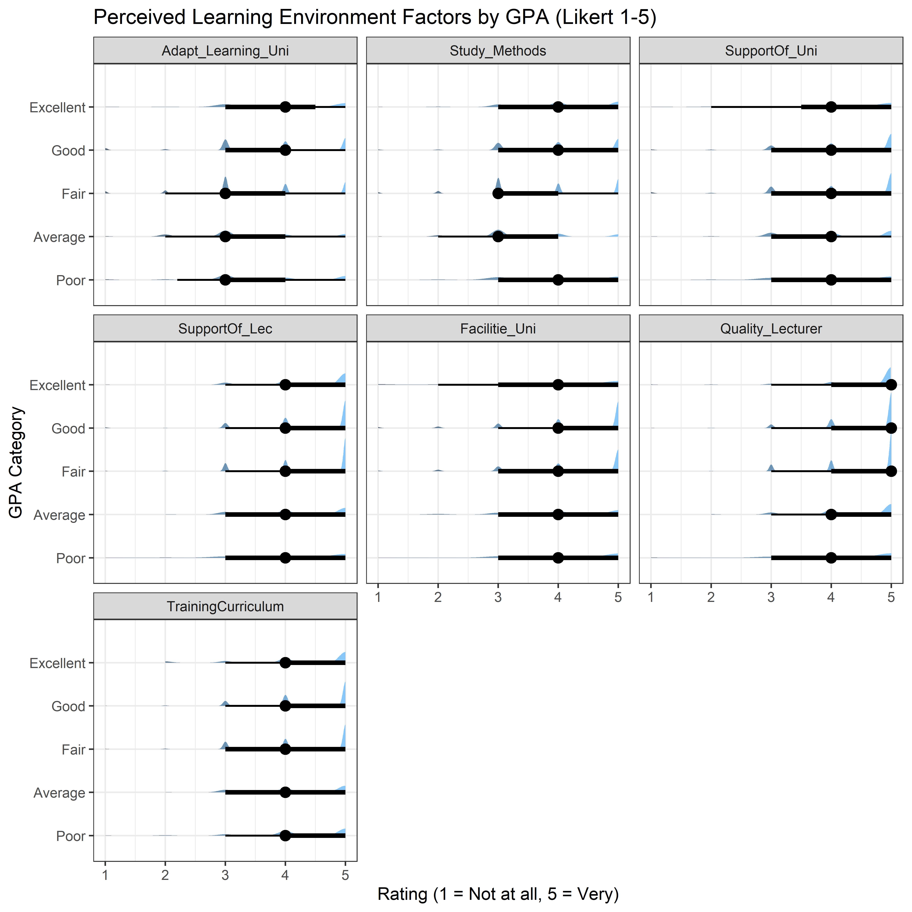
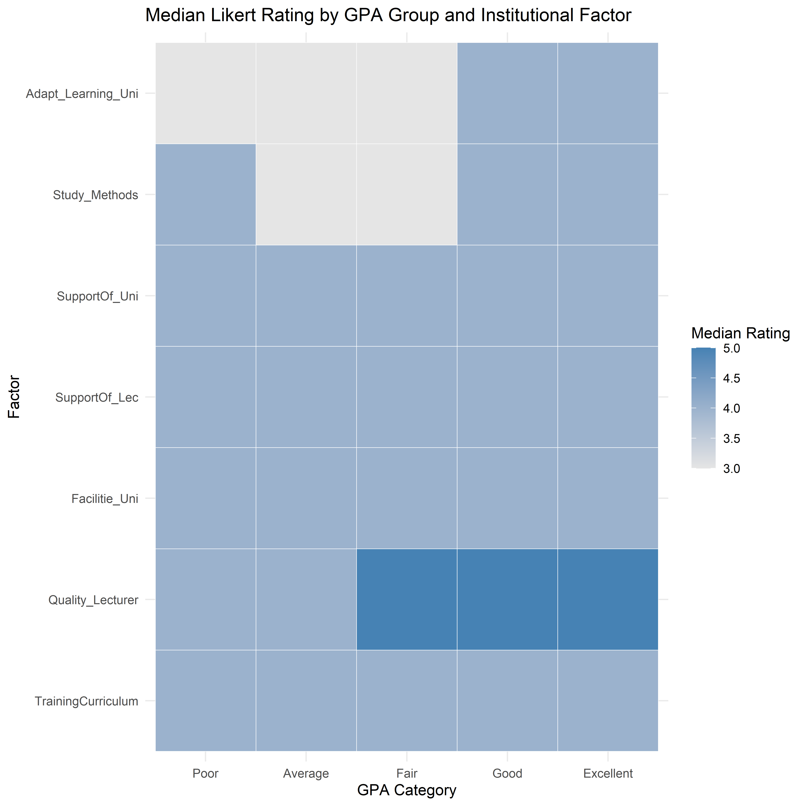
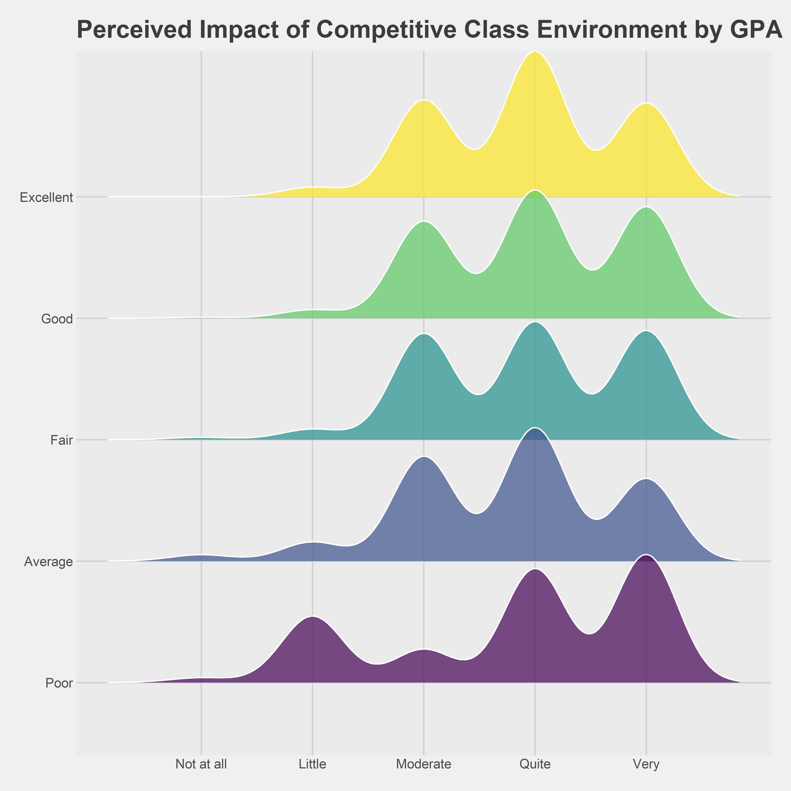
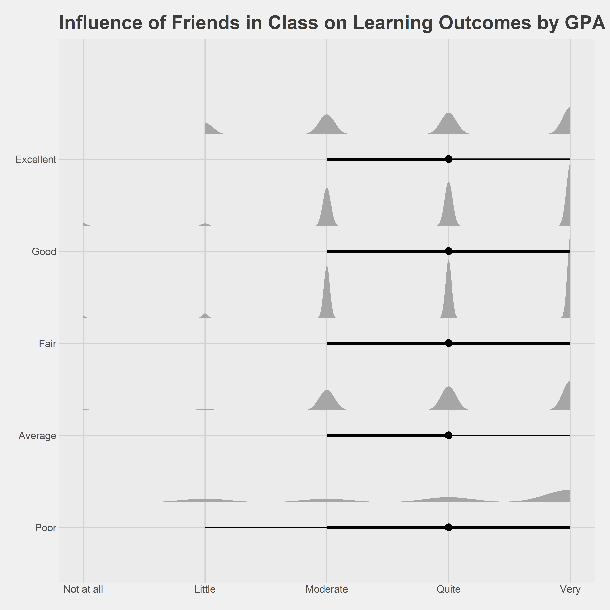

pacman::p_load(tidyverse, readxl, ggthemes, ggridges, ggdist, ggstatsplot, patchwork)Take-home Exercise 1: Visualization on Survey Analysis
via VNU
1 Overview
Survey analysis plays a critical role in transforming raw questionnaire responses into meaningful, relevant insights. By applying descriptive and visually-driven analytical techniques, patterns and relationships within survey data can be revealed to support evidence-based decision-making.
This take-home exercise analyses a student survey dataset collected at the University of Education, Vietnam National University, Hanoi, focusing on factors that may influence students’ learning outcomes. The dataset captures information on students’ demographic background, socio-economic conditions, time allocation, academic performance (GPA), and perceptions of the learning environment.
The objective of this exercise is to apply tidy data principles and data visualisation techniques using the tidyverse and ggplot2 to uncover key observations from the survey. Emphasis is placed on producing clear, truthful, and enlightening visualisations that effectively communicate patterns in students’ learning experiences and outcomes.
2 Getting started
2.1 Installing and loading the required libraries
The R packages used in this take-home exercise are:
tidyverse (i.e. readxl, tidyr, dplyr, ggplot2) for performing data science tasks such as importing, tidying, and wrangling data, as well as creating graphics;
readxl: tidyverse package to extract data from Excel file format;
ggthemes: to use additional themes for ggplot2
ggridges for creating ridgeline plots;
ggdist for visualising distributions and uncertainty;
ggstatsplot: to create graphics with details from statistical tests; and
patchwork: to prepare composite figure created using ggplot2.
2.2 Importing data
In this exercise, we will use the Dataset of factors affecting learning outcomes of students at the University of Education, Vietnam National University, Hanoi. The survey dataset is provided in Excel format, accompanied by a detailed codebook that explains the meaning and coding of each variable.
The code chunk below imports Database paper.xlsx into R environment by using read_excel() function of readxl package.
survey <- read_excel("data/Database paper.xlsx")
glimpse(survey)Rows: 2,170
Columns: 22
$ Year <dbl> 5, 5, 5, 5, 5, 5, 5, 5, 5, 5, 5, 5, 5, 5, 5, 5, 5, …
$ Gender <dbl> 2, 1, 2, 2, 1, 2, 2, 2, 2, 2, 1, 2, 2, 2, 2, 2, 2, …
$ Policy_Stu <dbl> 2, 2, 2, 2, 1, 2, 2, 2, 2, 2, 2, 2, 2, 1, 2, 2, 2, …
$ Minority_Stu <dbl> 2, 2, 2, 2, 2, 2, 2, 2, 2, 2, 2, 2, 2, 2, 2, 2, 2, …
$ Poor_Stu <dbl> 2, 2, 2, 2, 2, 2, 2, 2, 2, 2, 2, 2, 2, 2, 2, 2, 2, …
$ Father_Edu <dbl> 4, 3, 4, 5, 2, 5, 6, 5, 5, 5, 3, 3, 3, 3, 3, 4, 5, …
$ Mother_Edu <dbl> 4, 3, 4, 4, 3, 5, 5, 4, 5, 4, 3, 3, 3, 4, 3, 4, 5, …
$ Father_Occupation <dbl> 2, 2, 1, 1, 3, 1, 1, 5, 1, 3, 3, 3, 3, 3, 2, 2, 4, …
$ Mother_Occupation <dbl> 3, 4, 2, 1, 3, 2, 4, 3, 1, 3, 3, 3, 3, 3, 2, 2, 4, …
$ Time_Friends <dbl> 2, 1, 1, 2, 1, 1, 2, 2, 1, 3, 2, 2, 2, 2, 2, 1, 3, …
$ Time_SocicalMedia <dbl> 2, 3, 2, 2, 2, 3, 2, 2, 2, 2, 2, 1, 2, 2, 2, 3, 4, …
$ Time_Studying <dbl> 5, 5, 5, 5, 1, 2, 5, 5, 5, 5, 5, 5, 5, 1, 5, 5, 5, …
$ GPA <dbl> 4, 3, 4, 4, 4, 4, 3, 5, 5, 3, 3, 4, 4, 3, 5, 4, 4, …
$ Adapt_Learning_Uni <dbl> 4, 3, 4, 4, 5, 4, 4, 4, 4, 3, 4, 4, 4, 5, 4, 4, 5, …
$ Study_Methods <dbl> 4, 3, 4, 4, 5, 4, 4, 4, 4, 4, 4, 4, 4, 5, 4, 3, 5, …
$ SupportOf_Uni <dbl> 3, 3, 4, 5, 5, 5, 5, 5, 4, 5, 4, 4, 4, 5, 4, 4, 5, …
$ SupportOf_Lec <dbl> 4, 4, 4, 5, 5, 4, 5, 4, 4, 5, 4, 4, 4, 5, 4, 4, 5, …
$ Facilitie_Uni <dbl> 4, 4, 3, 5, 5, 5, 5, 4, 4, 5, 4, 4, 4, 5, 4, 3, 5, …
$ Quality_Lecturer <dbl> 4, 3, 4, 5, 5, 5, 4, 5, 5, 5, 4, 4, 4, 5, 4, 4, 5, …
$ TrainingCurriculum <dbl> 4, 3, 4, 4, 5, 4, 5, 4, 4, 5, 4, 4, 4, 5, 4, 3, 5, …
$ Competitive_Class <dbl> 3, 3, 4, 4, 4, 3, 4, 3, 4, 4, 4, 4, 4, 5, 4, 4, 5, …
$ InfuenceF_Friends <dbl> 3, 4, 4, 4, 5, 3, 5, 4, 4, 4, 4, 4, 4, 5, 4, 5, 4, …2.3 Data Cleaning
Variable Recoding: Most survey variables are coded numerically but represent categorical or ordinal responses. Based on the codebook, selected variables are recoded into meaningful factor labels to improve interpretability in later visualisations.
survey1 <- survey %>%
mutate(
Year = factor(Year,
levels = 1:5,
labels = c("First-year", "Second-year",
"Third-year", "Fourth-year", "Graduated")),
Gender = factor(Gender,
levels = c(1, 2),
labels = c("Male", "Female")),
GPA = factor(GPA,
levels = 1:5,
labels = c("Poor", "Average", "Fair",
"Good", "Excellent"),
ordered = TRUE)
)Missing values are inspected to ensure they do not distort visual interpretation. Luckily, we do not find any missing values in this dataset.
colSums(is.na(survey1)) Year Gender Policy_Stu Minority_Stu
0 0 0 0
Poor_Stu Father_Edu Mother_Edu Father_Occupation
0 0 0 0
Mother_Occupation Time_Friends Time_SocicalMedia Time_Studying
0 0 0 0
GPA Adapt_Learning_Uni Study_Methods SupportOf_Uni
0 0 0 0
SupportOf_Lec Facilitie_Uni Quality_Lecturer TrainingCurriculum
0 0 0 0
Competitive_Class InfuenceF_Friends
0 0 3 Overview of Respondent Profile
Before analysing learning outcomes, we want to understand who the respondents are. This section profiles students by:
year of study
gender
socio-economic background indicators
These variables provide essential context for interpreting later patterns related to GPA and learning experiences.
3.1 Distribution of Students by Year of Study
We will plot simple bar charts using ggplot, then put them together using patchwork as shown in code chunks below:
p1 <- survey1 %>%
count(Year) %>%
ggplot(aes(x = Year, y = n)) +
geom_col(fill = "#4C72B0") +
labs(
title = "Distribution of Students by Year of Study & Gender",
x = "Year of Study",
y = "Number of Students"
) +
theme_minimal()
p2 <- survey1 %>%
count(Gender) %>%
ggplot(aes(x = Gender, y = n, fill = Gender)) +
geom_col(show.legend = FALSE) +
labs(
x = "Gender",
y = "Number of Students"
) +
theme_minimal()
p1 + p2
Observation
The distribution of respondents shows a strong concentration of graduated students, indicating that individuals who have completed their studies form the largest subgroup in this survey. This suggests that the dataset largely reflects retrospective perspectives on learning experiences rather than those of students currently enrolled in earlier years of study.
In addition, the gender breakdown reveals that females are the majority among respondents. It implies that later findings may be more representative of female students’ experiences.
As a result, interpretations of learning outcomes and associated factors should be made with caution, recognising the potential influence of both graduation status and gender imbalance on the observed patterns.
3.2 Distribution of Students by Socio-economic Background Indicators
We will plot simple bar charts using the same method as shown in code chunks below:
survey1 %>%
select(Policy_Stu, Minority_Stu, Poor_Stu) %>%
pivot_longer(
cols = everything(),
names_to = "Indicator",
values_to = "Status"
) %>%
mutate(
Status = factor(Status, levels = c(1, 2), labels = c("Yes", "No"))
) %>%
count(Indicator, Status) %>%
ggplot(aes(x = Indicator, y = n, fill = Status)) +
geom_col(position = "dodge") +
labs(
title = "Socio-Economic Background of Respondents",
x = "Indicators",
y = "Number of Students",
fill = "Status"
) +
theme_minimal()
Note
While the majority of students report not belonging to special categories, a non-trivial proportion indicate receiving government policy support. These students may face additional challenges that affect their learning outcomes, such as limited access to resources or heightened financial pressure. Subsequent analyses can explore whether such socio-economic conditions are associated with distinct patterns in study time, academic performance, or perceptions of institutional support.
4 Exploratory Data Analysis - Factors Affecting Learning Outcomes
4.1 Time Allocation & Study Behaviour
Students’ daily time allocation reflects behavioural choices that may influence learning outcomes. This section examines how study time, social media use, and time spent with friends are distributed across GPA categories.
Study Time Across GPA Levels
We will use distribution-based visualisations to highlight variation rather than simple counts. In this code chunk below, geom_density_ridges() of ggridges() is used to make the ridgeline plot.
survey1 %>%
ggplot(aes(
x = Time_Studying,
y = GPA,
fill = GPA
)) +
geom_density_ridges(
alpha = 0.7,
scale = 1.2,
color = "white"
) +
scale_x_continuous(
breaks = 1:5,
labels = c(
"Under 2h", "2-4h", "4-6h", "6-8h", "Over 8h"
)
) +
labs(
title = "Distribution of Daily Study Time by GPA",
x = "Average Daily Study Time",
y = "GPA Category"
) +
theme_minimal() +
theme(legend.position = "none")
Observation
Most students spend more than 8 hours daily for studying. Students in the Poor and Average GPA categories exhibit distributions skewed toward shorter study times, with a higher concentration below eight hours per day.
This pattern suggests that study duration alone does not fully determine outcomes, but remains a strong differentiating factor.
Social Media Usage
In the code chunk below, we use ggdist() half-eye distribution plot to reveal differences in social media usage across GPA categories.
survey1 %>%
ggplot(aes(
x = Time_SocicalMedia,
y = GPA
)) +
stat_halfeye(
adjust = 0.5,
width = 0.6,
.width = c(0.5, 0.8),
justification = -0.3
) +
scale_x_continuous(
breaks = 1:5,
labels = c(
"Under 1h", "1-2h", "2-3h", "3-4h", "Over 4h"
)
) +
labs(
title = "Distribution of Daily Social Media Use by GPA",
x = "Average Daily Social Media Usage",
y = "GPA Category"
) +
theme_minimal()
Observation
Lower GPA groups display wider and right-shifted distributions, indicating higher and more variable social media consumption. In contrast, students with Good and Excellent GPAs tend to have distributions centred around lower to moderate usage levels, with narrower spreads.
This suggests that excessive social media use may be associated with weaker academic performance, although moderate usage appears common across all GPA groups. Once again, social media use is not inherently detrimental, but higher intensity usage is more prevalent among lower-performing students.
Time Spent with Friends
In the code chunk below, we use ggstatsplot() package to combine both distributionand group comparison in Time Spent with Friends across GPA categories. Note that the GPA y-axis is in ordinal scale (1-5)
survey %>%
mutate(
Time_Friends = factor(
Time_Friends,
levels = 1:5,
labels = c("Under 1h", "1-2h", "2-3h", "3-4h", "Over 4h"),
ordered = TRUE
),
GPA_num = as.integer(GPA)
) %>%
ggbetweenstats(
x = Time_Friends,
y = GPA_num,
type = "nonparametric",
pairwise.comparisons = FALSE,
centrality.plotting = TRUE,
messages = FALSE
) +
labs(
title = "Time Spent with Friends and GPA",
x = "Average Daily Time Spent with Friends",
y = "GPA Level (Ordinal)"
) +
theme_minimal()
Note
Students who spend a moderate amount of time with friends (around one to three hours per day) tend to exhibit higher central GPA values compared to those at the extremes (more than four hours per day).
Likewise, social interaction is not inherently detrimental to learning outcomes; rather, its impact depends on intensity.
4.2 Learning Environment & Institutional Support
This section examines how students’ perceptions of the learning environment and institutional support vary across academic performance levels (GPA), and try to answer: which institutional factors are most strongly differentiated between low- and high-performing students?
Key Support Factors by GPA
We will examine several support factors: “Adapt_Learning_Uni”, “Study_Methods”, “SupportOf_Uni”, “SupportOf_Lec”, “Facilitie_Uni”, “Quality_Lecturer”, “TrainingCurriculum” and spot their effects on GPA Levels. In this chunk below ggdist() package will be used to visualize the Likert scale of said factors.
likert_vars <- c(
"Adapt_Learning_Uni", "Study_Methods", "SupportOf_Uni", "SupportOf_Lec",
"Facilitie_Uni", "Quality_Lecturer", "TrainingCurriculum"
)
survey1 %>%
select(GPA, all_of(likert_vars)) %>%
pivot_longer(
cols = all_of(likert_vars),
names_to = "Factor",
values_to = "Rating"
) %>%
mutate(
Factor = factor(Factor, levels = likert_vars),
Rating = as.integer(Rating)
) %>%
ggplot(aes(x = Rating, y = GPA)) +
stat_slab(aes(fill = after_stat(x)), alpha = 0.7) +
stat_pointinterval(.width = c(0.5, 0.8)) +
facet_wrap(~Factor, ncol = 3) +
scale_x_continuous(breaks = 1:5) +
labs(
title = "Perceived Learning Environment Factors by GPA (Likert 1-5)",
x = "Rating (1 = Not at all, 5 = Very)",
y = "GPA Category"
) +
theme_bw() +
theme(legend.position = "none")
Which Factors Differentiate GPA Most?
Here we compute median rating per GPA for each factor and display it as a heatmap using geom_tile().
survey1 %>%
select(GPA, all_of(likert_vars)) %>%
pivot_longer(
cols = all_of(likert_vars),
names_to = "Factor",
values_to = "Rating"
) %>%
mutate(
Factor = factor(Factor, levels = rev(likert_vars)),
Rating = as.integer(Rating)
) %>%
group_by(GPA, Factor) %>%
summarise(med_rating = median(Rating, na.rm = TRUE), .groups = "drop") %>%
ggplot(aes(x = GPA, y = Factor, fill = med_rating)) +
geom_tile(color = "white") +
scale_fill_gradient(low = "grey90", high = "steelblue") +
labs(
title = "Median Likert Rating by GPA Group and Institutional Factor",
x = "GPA Category",
y = "Factor",
fill = "Median Rating"
) +
theme_minimal()
Insights
Across the learning-environment factors, higher GPA groups tend to show distributions shifted toward stronger agreement (ratings 4-5), while lower GPA groups display more mass in neutral-to-low ratings (2-3). This suggests that academic performance is associated not only with individual behaviours (e.g., study time) but also with perceived effectiveness of learning adaptation, study methods, and institutional support.
In the heatmap, clear gradient is observed for multiple factors:
High-performing students tend to report stronger agreement that they are well-adapted to university learning and have effective study methods; while lower GPA groups show barriers in learning adaptation or less-effective study methods.
Likewise, High-performing students strongly agree with the quality of lecturers; while lower GPA groups show weaker agreement.
4.3 Peer & Competition Effects
Peers influence learning outcomes through both social support and academic pressure. This section examines how students perceive the impact of (1) competitive class environments and (2) classmates’ influence, and how these perceptions vary across GPA groups.
Competitive Class Environment and GPA
We once again perform ridgeline plot to see the perception patterns of competitive class environments across GPA categories.
survey1 %>%
mutate(
Competitive_Class = as.integer(Competitive_Class)
) %>%
ggplot(aes(
x = Competitive_Class,
y = GPA,
fill = GPA
)) +
geom_density_ridges(
alpha = 0.7,
scale = 1.2,
color = "white"
) +
scale_x_continuous(
breaks = 1:5,
labels = c("Not at all", "Little", "Moderate", "Quite", "Very")
) +
labs(
title = "Perceived Impact of Competitive Class Environment by GPA",
x = "Impact Level (Likert 1-5)",
y = "GPA Category"
) +
theme_fivethirtyeight() +
theme(legend.position = "none")
Observation
Higher-performing students tend to report moderate to high levels of competition affecting them, with distributions concentrated around ratings of 3-5. This suggests that academic competition may act as a motivating force for stronger-performing students.
In contrast, lower GPA groups display more dispersed distributions, indicating mixed or weaker perceptions of competitive pressure. Some students in these groups report minimal impact, while others perceive competition as strongly affecting them, possibly in a discouraging manner.
Overall, competitive environments do not uniformly benefit or hinder students; instead, their impact appears conditional on students’ academic standing and ability to cope with pressure.
Influence of Friends in Class and GPA
To visualize the distribution of perceived peer influence between students, half-eye plot of ggdist() will be used as shown in this chunk below:
survey1 %>%
mutate(
InfuenceF_Friends = as.integer(InfuenceF_Friends)
) %>%
ggplot(aes(
x = InfuenceF_Friends,
y = GPA
)) +
stat_halfeye(
adjust = 0.6,
width = 0.6,
.width = c(0.5, 0.8),
justification = -0.3
) +
scale_x_continuous(
breaks = 1:5,
labels = c("Not at all", "Little", "Moderate", "Quite", "Very")
) +
labs(
title = "Influence of Friends in Class on Learning Outcomes by GPA",
x = "Perceived Influence of Friends (Likert 1-5)",
y = "GPA Category"
) +
theme_fivethirtyeight()
Observation
Higher GPA groups tend to report stronger and more consistent positive influence from friends in class, with distributions centred around higher Likert ratings. This suggests that academically successful students may benefit more from peer collaboration, knowledge sharing, or supportive learning networks.
Lower GPA groups, however, show wider and more variable distributions, indicating inconsistent peer influence. Some students benefit from classmates, while others experience little or no positive effect.
Above findings highlight that social support mechanisms may be more uniformly beneficial to learning outcomes than competitive dynamics. This reinforces the importance of fostering collaborative peer environments alongside academic rigor.
5 Summary of Findings
5.1 Key Observations
Observation 1: Behavioural discipline differentiates GPA more clearly than background
Across all findings, Time Allocation & Study Behavior shows the most consistent gradient across GPA categories, while social media use and time spent with friends display weaker effects. This suggests that behavioural discipline, particularly sustained study effort is a stronger differentiator of academic performance than demographic or socio-economic background.
Observation 2: Balance matters more than extremes
Both social media usage and time spent with friends exhibit non-monotonic patterns. Moderate value aligns with higher GPA distributions, while both minimal and excessive value correspond to lower-performing GPA distributions. This highlights balance, rather than abstinence, is important.
Observation 3: Institutional factors reinforce, rather than replace individual effort
Students with higher GPAs consistently report stronger agreement across learning adaptation, study methods, lecturer quality, etc. However, these factors appear to amplify existing academic engagement rather than compensate for weak study behaviours, indicating a reinforcing effect.
Observation 4: Peer support is more beneficial than peer competition
While competitive class environments show mixed and conditional effects across GPA groups, the influence of friends in class demonstrates a clear positive alignment with higher academic performance. Collaborative peer networks appear to be more consistently associated with positive learning outcomes than competitive pressure.
Observation 5: Lower-performing students experience greater heterogeneity
Across multiple dimensions, lower GPA groups exhibit wider distributions. This suggests that weaker-performing students are not homogeneous, and interventions may need to be more targeted rather than one-size-fits-all.
5.2 Overall Implications
Together, the findings indicate that academic performance is shaped by a combination of disciplined study behaviour, supportive institutional environments, and positive peer relationships. While demographic and background factors provide important context, they are less decisive than how students allocate time and perceive their learning environment. The use of distribution-based visualisations reveals meaningful heterogeneity that would be harder to see by mean-based summaries, supporting more nuanced interpretation of learning outcomes.
Reference
Kam, T. S. (2023). R for Visual Analytics.
Hadley Wickham (2023) ggplot2: Elegant Graphics for Data Analysis. Online 3rd edition.
Winston Chang (2013) R Graphics Cookbook 2nd edition. Online version.
Healy, Kieran (2019) Data Visualization: A practical introduction. Online version
H.-V.T. Dinh, et al. Vietnamese students’ satisfaction toward higher education service: the relationship between education service quality and educational outcomes